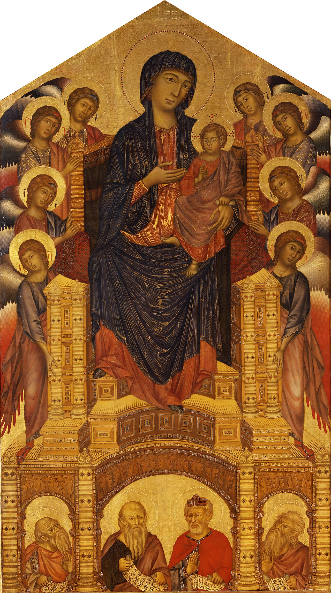
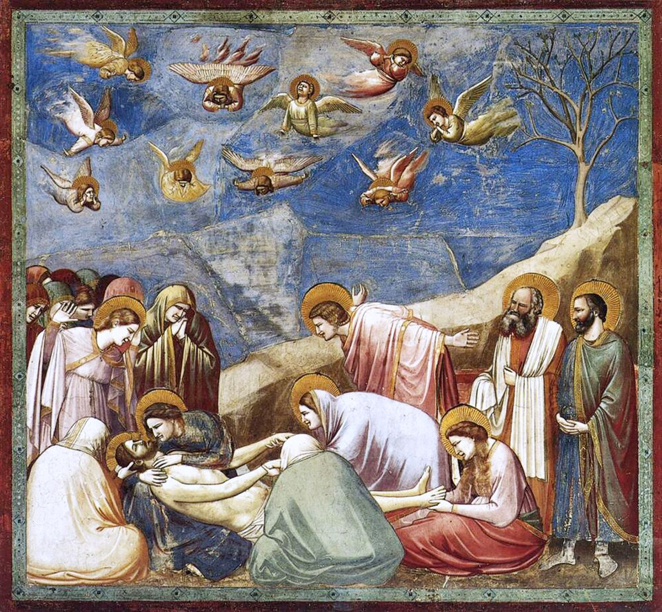
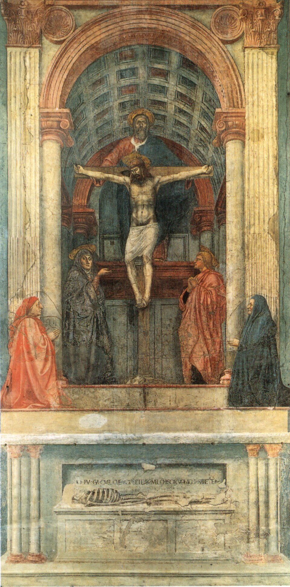
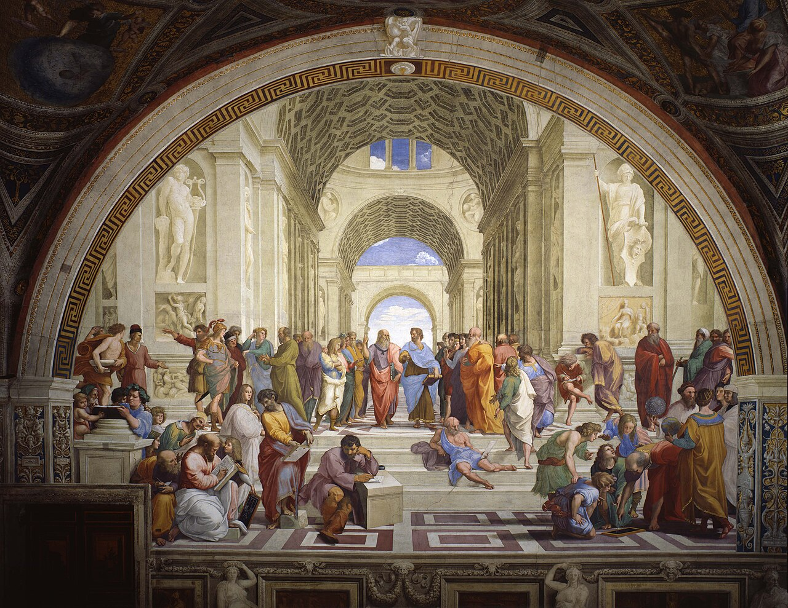
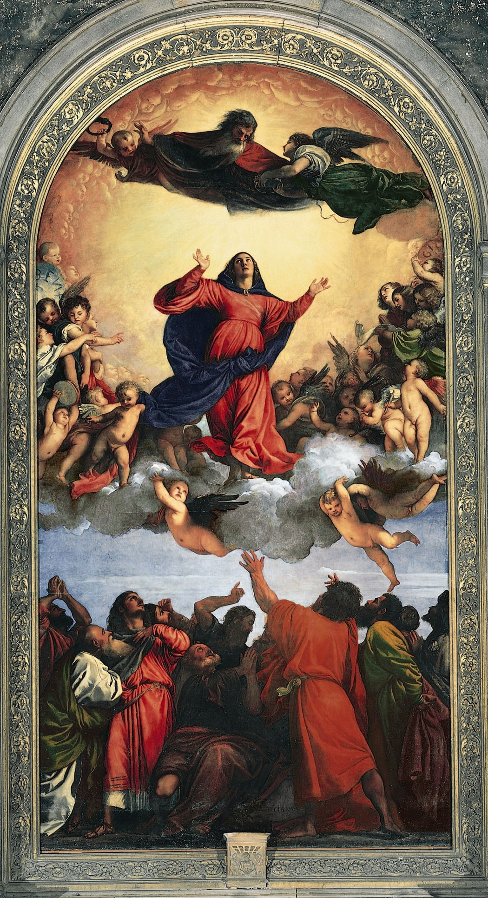
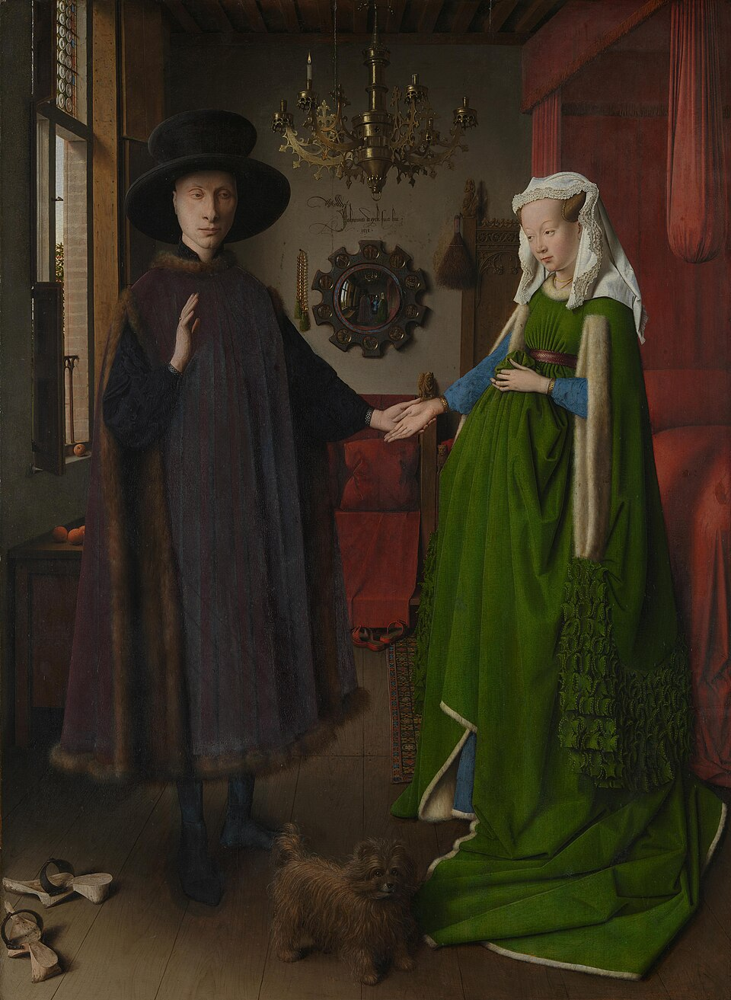
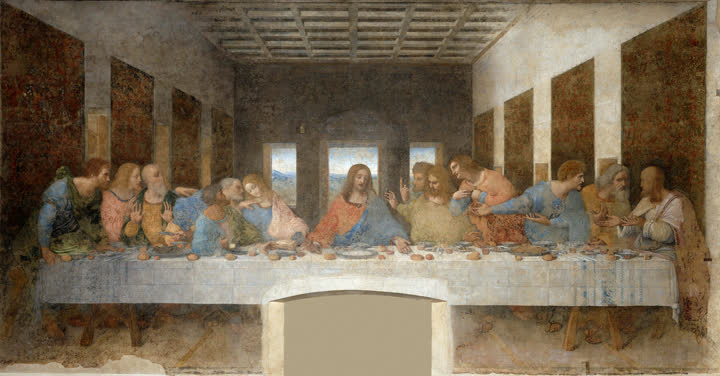

중세 후기 · 이탈리아
르네상스는 하나의 화가가 갑자기 시작한 단일 양식이 아니다. 중세 후기의 종교적·상징적 회화에서 출발하여, 인간의 몸, 감정, 자연, 공간을 관찰하고 고대 그리스·로마의 지적·미적 전통을 새롭게 해석하려 한 장기적 변화였다. 이후 이탈리아에서는 피렌체·로마 계열과 베네치아 계열이 뚜렷한 차이를 보였고, 북유럽에서는 유화와 세밀한 관찰을 중심으로 한 북유럽 르네상스가 독자적으로 발전했다.
가장 단순화하면, 르네상스 회화의 변화는 “성스러운 의미를 상징적으로 보여주는 것”에서 “성스러운 사건도 인간이 살아가는 실제 세계 안에서 설득력 있게 보여주는 것”으로의 이동이다.
성인도 무게를 가진 신체와 구체적 표정을 지닌 인간으로 나타난다.
원근법과 건축 구조를 통해 그림 속 공간을 논리적으로 조직한다.
인체·풍경·빛·사물의 실제 모습을 적극적으로 연구한다.
그리스·로마의 조각, 건축, 철학과 인간관을 새로운 시대에 맞게 재구성한다.
관람자의 눈높이와 위치가 그림의 공간 구성에 실제로 관여한다.



| 관찰 항목 | 중세 후기 회화 | 초기 르네상스 |
|---|---|---|
| 공간 | 상징적·초월적 공간 | 선원근법으로 조직된 논리적 공간 |
| 인물 | 종교적 역할과 위계가 우선 | 무게·부피·감정을 가진 인간 |
| 배경 | 금빛·비현실적 | 건축·풍경·실내 등 현실적 환경 |
| 빛 | 성스러움과 장식성을 강조 | 입체와 공간을 만드는 자연스러운 빛 |
| 고대문화 | 제한적 | 고대 그리스·로마의 인체와 건축을 적극 재해석 |
| 관람자 | 성상을 경배하는 위치 | 그림 속 공간과 시각적으로 연결된 위치 |
모든 르네상스 회화를 하나의 양식으로 묶으면 차이가 보이지 않는다. 작품을 보는 데 가장 유용한 구분은 다음 세 방향이다.
디세뇨(disegno) — 드로잉, 윤곽, 원근법, 해부학, 기하학적 구성을 중시한다.



| 비교 항목 | 피렌체·로마 | 베네치아 | 북유럽 |
|---|---|---|---|
| 대표작 | 라파엘로 《아테네 학당》 | 티치아노 《성모 승천》 | 얀 반 에이크 《아르놀피니 부부의 초상》 |
| 핵심 질문 | 세계를 어떻게 논리적이고 이상적으로 조직할까? | 색과 빛으로 어떻게 살아 있는 감각을 만들까? | 눈앞의 사물을 얼마나 정확하게 관찰할 수 있을까? |
| 형태 | 윤곽·드로잉·해부학 | 색면·붓질·빛 | 미세한 표면 묘사 |
| 공간 | 선원근법과 기하학적 질서 | 빛·대기·색의 깊이 | 경험적 공간과 세밀한 실내 관찰 |
| 인체 | 이상적이고 구조적으로 명확함 | 빛과 색 속에서 감각적으로 나타남 | 개별 인물의 얼굴·복식·표면을 세밀히 묘사 |
| 고전 고대 | 매우 적극적 | 적극적이지만 색채적 전통과 결합 | 초기에는 상대적으로 약하며 이후 이탈리아 영향과 결합 |
| 기억법 | 구조 | 색과 빛 | 표면과 관찰 |
화면의 작품 이미지는 원작이 공공영역에 속하는 회화의 Wikimedia Commons 공개 이미지를 불러오도록 구성했다.
※ 작품 이미지는 자료 폴더의 로컬 이미지 파일을 사용한다. 본문의 설명도 파일 자체에 모두 포함되어 있다.
르네상스의 공통 핵심은 인간과 자연의 관찰, 고전 고대의 재해석, 설득력 있는 공간과 인체였지만, 그것을 실현하는 방법은 지역마다 달랐다. 특히 독일 르네상스는 단순한 이탈리아 양식의 수입이 아니라, 북유럽의 정밀한 관찰·판화 전통·후기고딕의 강한 선적 표현에 이탈리아의 비례·원근법·고전주의를 결합했다는 점이 중요하다.
| 지역·국가 | 지역적 특징 | 대표 화가 |
|---|---|---|
| 이탈리아 — 피렌체·로마 | 선, 드로잉, 해부학, 선원근법과 고전적 비례를 통해 세계를 구조적으로 조직했다. | 마사초, 레오나르도, 미켈란젤로, 라파엘로 |
| 이탈리아 — 베네치아 | 형태의 윤곽보다 색채·빛·대기의 효과를 중시하여 보다 감각적이고 회화적인 전통을 발전시켰다. | 조반니 벨리니, 조르조네, 티치아노 |
| 네덜란드·플랑드르 | 유화의 투명한 층, 반사광, 사물의 재질과 일상 공간을 세밀하게 관찰하는 방식이 두드러졌다. | 얀 반 에이크, 로히어르 반 데르 베이던 |
| 독일 | 북유럽의 세밀한 관찰과 강한 선적 전통을 유지하면서 이탈리아 르네상스의 비례·원근법·고전적 인체 이론을 적극적으로 받아들였다. 특히 판화가 회화와 동등하게 중요한 지적·예술적 매체가 되었다. | 알브레히트 뒤러, 루카스 크라나흐, 한스 홀바인 2세, 알브레히트 알트도르퍼 |
| 프랑스 | 16세기 왕실 후원 아래 이탈리아 르네상스가 건축·궁정미술과 결합했고, 이후 퐁텐블로파에서 매너리즘적 성격도 강해졌다. | 장 클루에, 프랑수아 클루에 |
뒤러는 이탈리아 여행을 통해 인체 비례, 원근법, 고전주의에 깊은 관심을 가졌지만 이를 북유럽 특유의 정밀한 관찰과 탁월한 목판·동판화 기술에 결합했다.
따라서 뒤러는 독일 르네상스와 이탈리아 르네상스를 연결한 가장 중요한 인물로 볼 수 있다.
크라나흐는 루터와 긴밀하게 연결되어 종교개혁 시대의 초상·종교 이미지·인쇄문화에 중요한 역할을 했다. 홀바인은 극도로 정밀한 초상화를 통해 개인의 얼굴뿐 아니라 의복·직업·사회적 지위를 세밀하게 기록했다.
독일 르네상스는 이처럼 인문주의와 종교개혁이라는 새로운 사회적 환경과도 깊게 결합했다.
알트도르퍼와 볼프 후버를 중심으로 한 도나우파는 남독일·오스트리아에서 숲·산·하늘과 대기 같은 자연 자체를 화면의 주인공으로 끌어올렸다.
따라서 도나우파는 르네상스의 상위 범주에 속하지만, 독자적인 조형적 성격이 뚜렷해 별도의 도나우파.html로 연결할 가치가 있다.
북유럽 르네상스는 이탈리아 양식의 도입과 각 왕실·교회·도시의 요구가 결합한 지역적 변형으로 이해하는 것이 정확하다.
본문에 이름이 등장하는 주요 화가는 아래처럼 대표작 한 점과 함께 읽어야 한다. 작품은 해당 사조의 핵심 특징을 실제 화면에서 확인하도록 고른 것이다.

원근법과 심리적 반응이 하나의 드라마로 결합되어 전성기 르네상스의 인간 중심적 서사를 보여준다.
고대 철학, 수학적 공간, 조화로운 인체가 르네상스 인문주의의 이상적 이미지가 된다.
베네치아 화파는 색과 빛의 층으로 상승 운동과 감각적 신성을 만든다.
북유럽 르네상스는 유화의 광택과 세부 관찰로 사물의 현실감을 극대화했다.